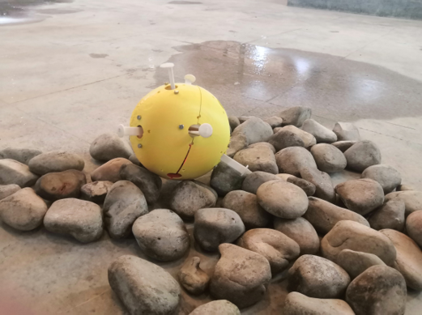
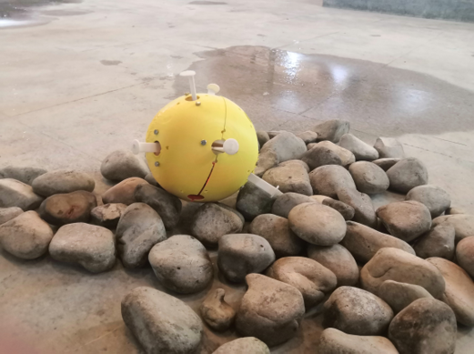

Haofei Ma
I am now a master student in the State Key Laboratory of Robot Technology and Systems of Harbin Institute of Technology, mainly engaged in the research of robot autonomous operation technology based on pose estimation and imitation learning.
Education
Recent Projects
 Description:
Description:
Because of the irregularities on the object's surface and variations in lighting conditions, point cloud images obtained from a single perspective often contain significant gaps and errors at the object's edges, which can lead to inaccurate grasping pose estimations. To tackle these challenges, this article proposes a practical robot grasping method based on 6D pose estimation and point cloud fusion. First, 6D pose estimation is conducted, utilizing the results from model point cloud and pose estimation to complete the input point cloud through ICP (Iterative Closest Point). Subsequently, the resulting complete object point cloud is used to estimate the 6D grasping pose of the object with the help of the grasping direction estimation network.
Finished Works:1. Establish a model-free 6D pose estimation network based on perspective matching. Construct and train the pose estimation network to achieve precise pose estimation for seen objects and a rough estimation method for untrained objects. Create a pose refinement network for untrained objects when sparse point clouds are accessible.
2. Propose a point cloud fusion and filtering method based on pose estimation. This method addresses the issue of point cloud gaps at the edge of objects when the robot collects samples from a single perspective. The point cloud fusion method is designed to utilize the output of pose estimation to fill in the gaps in the input point cloud and remove noise.
3. Perform grasp pose estimation using the completed point cloud. Utilizing the grasping angle prediction network and a fast search strategy, the completed point cloud enhances the stability of grasping pose generation, thereby improving the success rate of grasping and its robustness.
4. Test the system in simulation and the real world using a 6DoF robot, a Realsense camera, and a laptop (ROS/Ubuntu 20.04) as the host computer.
 Description:
Description:
The research objective is to enhance the efficiency and accuracy of autonomous suturing in endoscopic surgery. This involves designing a 3DOF autonomous suturing instrument, developing an efficient laparoscopic surgery robot based on 3D laparoscopy, and establishing a robot system that integrates visual, expert, and navigation systems.
Finished Works:1. Perform the recognition and segmentation of surgical instruments and lesion tissues based on Yolov8, and determine the spatial position of the end of the surgical instruments.
2. Build a vision and robotic arm fusion system, perform hand-eye calibration of cameras and robotic arms, and execute basic robot actions for visual servo.
 Description:
Description:
Rock Core samples obtained from drilling before oil extraction are crucial data for assessing mining value, and they are stored in dedicated core boxes. During research and analysis, it's essential to arrange these rock core boxes neatly on-site in a designated order, one box at a time. However, these boxes are typically heavy, resulting in a high labor intensity that can impact transportation efficiency. The present invention aims to address the labor intensity associated with the current method of transporting core boxes, ultimately improving transportation efficiency.
Finished Works:1. Build a sensing system that utilizes infrared sensors to detect surrounding obstacles, as well as fractional laser sensors to detect the current stacking height and alignment.
2. Implement rock core box instance segmentation based on Mask RCNN, combined with a depth camera to determine its corner space coordinates for visual servo during the robot handling process.
3. Utilize a monocular camera and Aruco markers to achieve 2D pose adjustment of the robot in place by identifying the offset distance and angle of the Aruco marker.
 Description:
Description:
In traditional medical processes, traditional Chinese medicine practitioners often need to frequently change positions and adjust their angles to view the surgical area. Additionally, during rehabilitation treatment, the camera's range can be inadequate to cover the patient's moving area. Current recording methods commonly used suffer from limitations and lack automation. This article introduces a multi-degree-of-freedom pan-tilt system designed to track the positions of doctors and patients.
Finished Works:1. Design the mechanical structure and simulate the platform's motion, using internal toothed rotary bearings to minimize the structural size. Protective structures have been designed for all sensor components.
2. Design hardware control algorithms for pan-tilt using STM32 and A4988 drivers, and establish communication between STM32 and the host computer's ROS system for pan-tilt motion control within ROS.
3. Propose a target tracking method based on HOG and SIFT feature matching, capable of short-term single target tracking while maintaining robustness to changes in the target object's appearance.
4. Construct an experimental Pan-Tilt system and conduct experiments with all proposed algorithms, using 3D printed structural components, a Realsense camera, and stepper motors.
 
Description:

Description:
Monitoring essential information in various hazardous environments, such as petrochemical plants, chemical plants, and disaster sites, is vital for disaster prevention and reduction. In response to this need, our team has designed a spherical environment monitoring robot system. It features a spherical metamorphic structure with multiple telescopic feet that enable the robot to rotate, roll, and achieve all-round motion with high stability. These robots utilize self-organized network communication technology to offer multiple monitoring modes, and the collected data is packaged and transmitted to the upper computer system, enabling real-time dynamic monitoring of complex environmental information over a wide area.
Finished Works:1. Design the three-dimensional structure of the spherical robot, including the placement of controllers, sensors inside the sphere, and the spatial arrangement of leg motors.
2. Implement control of spherical robot leg motors using STM32, calculate motion strategies, and achieve robot motion.
3. Integrate , accelerometers, temperature and humidity sensors, gas sensors, etc., into the STM32 control system for Bluetooth-controlled robot motion and sensor data reception.
In response to the need for contactless temperature measurement and identity recognition during the epidemic, we have developed corresponding device designs. The system utilizes the STM32 microcontroller as the main control board to collect temperature data using the infrared temperature sensor module. Facial information recognition and mask detection are accomplished through the OpenMV module.
Finished Works:1. Propose a facial recognition and mask wearing detection methods using single camera.
2. Design a control system that integrates a camera, an infrared temperature sensor, and a screen with STM32 to create a device for identity recognition and body temperature detection.
Publications
- A study of robotic search strategy for multi-radiation sources in unknown environments
Hua Bai, Wenrui Gao, Haofei Ma, Pengchao Ding, Gongcheng Wang, Wenda Xu, Weidong Wang*, Zhijiang Du*
Robotics and Autonomous Systems | paper
Patents
- A Rock Core Box Handling Robot
Weidong Wang, Hengbin Liang, Haofei Ma, Gongcheng Wang
Invention Patent | CN202310547284.5 (Status: Pending) - A Spherical Metamorphic Robot and An Environmental Information Monitoring System. Utility Model
Yuhan Rao, Manhong Li, Haofei Ma, Yuchong Gao, Nuo Zhang, Xinyu Liu
Utility Model Patent | CN202120212154.2 - A Rope Driven Cleaning Robot
Bao Li, Manhong Li, Shuofan Li, Haofei Ma, Jidong Guo, Yuchong Gao, Yingxin Dong
Utility Model Patent | CN202120545507.0 - Small Ocean Vehicles Using Wave Energy to Generate Electricity
Yihan Gao, Haofei Ma, Shaoan Chen, Haoran Sun, Chenxi Song
Utility Model Patent | CN202020078465.X - Identity Recognition and Infrared Temperature Measurement Control System
Haofei Ma
Software Copyright | 2021SR1391064
Awards
Honors:
{kind=link}
{kind=link}
{kind=link}
{kind=link}
{kind=link}
{kind=link}
Competitions:
{kind=link}
{kind=link}
{kind=link}
{kind=link}
{kind=link}
{kind=link}
{kind=link}
{kind=link}
Societies
{kind=link}
Address: Harbin Institute of Technology, No. 92 Xidazhi Street, Nangang District, Harbin City, Heilongjiang Province
E-Mail: 22S108256@stu.hit.edu.cn